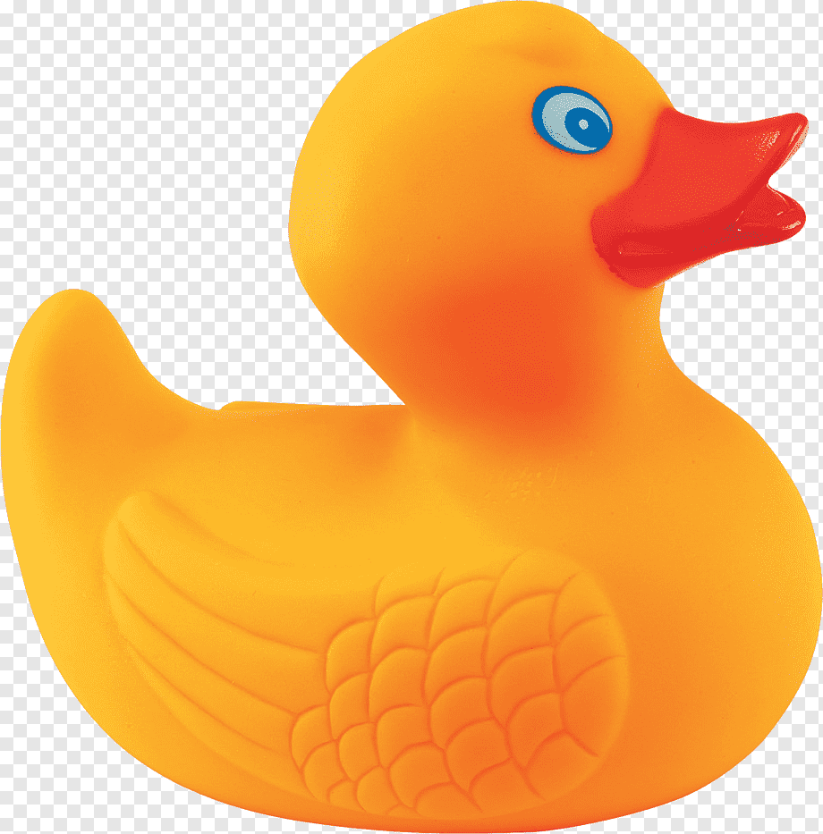

Quack!
Log in
The Rubber Duck Method
The Rubber Duck Method helps you solve problems by explaining them out loud. As you break it down, you’ll often find the solution on your own!
Type your problem below and let the "duck" help you figure it out!
Ask the duck!
or
force an answer